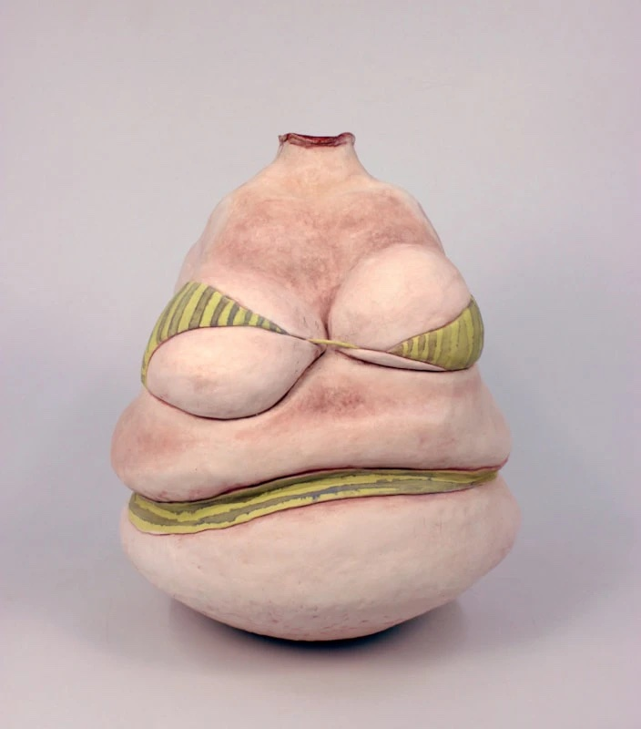

Bodies Luminous
Woman Made Gallery is pleased to announce, Bodies Luminous, a group exhibition bringing together 27 women and non-binary artists whose work was inspired by Diamond Forde’s poem “Fat Girl Dances with a Stranger at a Block Party.”
Curated by Madeline McConico, Sarah Peecher, and Ren Buchness, the exhibition also features six artist-poet collaborations creating installations that explore our complex, evolving, and deeply personal relationships to our bodies. Embracing expressions of joy, Bodies Luminous fosters a space where all bodies are seen, celebrated, and luminous.
Exhibition Events
The exhibition opens with an artist reception at Woman Made Gallery, 1332 S. Halsted St. in Chicago, on Saturday, May 23, from 5 to 8 p.m.
The Closing Reception includes an Artist Walkthrough on Saturday, June 20 from 2 to 4 p.m., offering a final opportunity to meet the participating artists in person.
All events are free and open to the public.
Exhibiting Artists
Julieta Beltran Lazo, Maura Benson, Molly Borth, Liya Du, Sarah Gerbasi, Julie Glass, Erin Gleason, Amy Hanks, London Heist, Hippo Artz, Anke Huyben, Mia Johnson, Lili Jones, Dahye Jung, Yuliya Klochan, Laurie LeBreton, Teresa Magana, Glenda Mah, Kathie Foley-Meyer, Mercury.N, Jacqueline W. Nuzzo, Kayla D. Smith, Daun Suh, Susanne Swanson Bernard, Skye Terry, Jennifer Warren, Leni Mae Wiegand